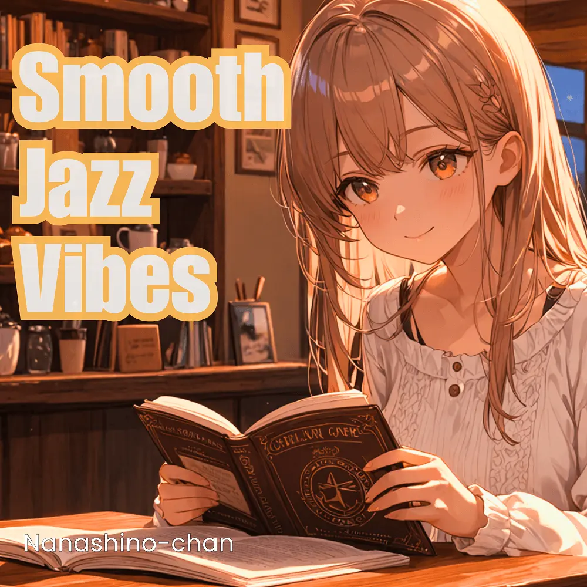

Chillhop · Lo-Fi · Jazzhop · Instrumental
Chillhop Lo-Fi Relax & Focus (Instrumental)
Nanashino-chan
穏やかなChillhopのビートに、温かいJazzhopの響きと、やさしいLo-Fiのリズムを重ねた26曲のインストゥルメンタル。勉強や読書のおともに、ひと息つきたい時間に。気になる曲から聴いてみてください。
2025-02-13 リリース · 26 曲 · Instrumental
アルバムを試聴
気になる音楽を、ここから。
曲を選ぶまでジャケットを表示します。試聴にはYouTubeを使用します。
YOUTUBE PREVIEW
試聴する曲を選んでください
曲を選ぶまでジャケットを表示します。試聴にはYouTubeを使用します。
再生できない場合は、配信サービスでアルバムや曲を開いてください。
配信サービスでアルバムを探す
「検索」のリンクは検索結果を開きます。サービス内でアルバムや曲を選択してください。
収録曲一覧 26
- 01Evening Breeze
- 02City Lights Reflections
- 03Velvet Sky
- 04Midnight Walk
- 05Chill Hop Groove
- 06Soft Steps
- 07Chill Dreams
- 08Cool Night Air
- 09Jazz & Beats
- 10Lounge Lullaby
- 11Urban Calm
- 12Rhythmic Relaxation
- 13Smooth Transitions
- 14Nightfall Vibes
- 15Chill Hop Echoes
- 16
- 17Jazz Fusion Beat
- 18Dreamy Vibes
- 19Serenade in Blue
- 20Softly Spoken
- 21Evening Melodies
- 22Quiet Reflections
- 23Nocturnal Journey
- 24Tranquil Jazz
- 25Chill Night Sessions
- 26Closing Serenade
SNSで使いたい音源を探す
「Nanashino-chan ＋ 曲名」をコピーして、SNSアプリの音源検索に貼り付けてください。音源の表示は地域やアカウントにより異なります。コピー機能は利用許諾を付与するものではありません。